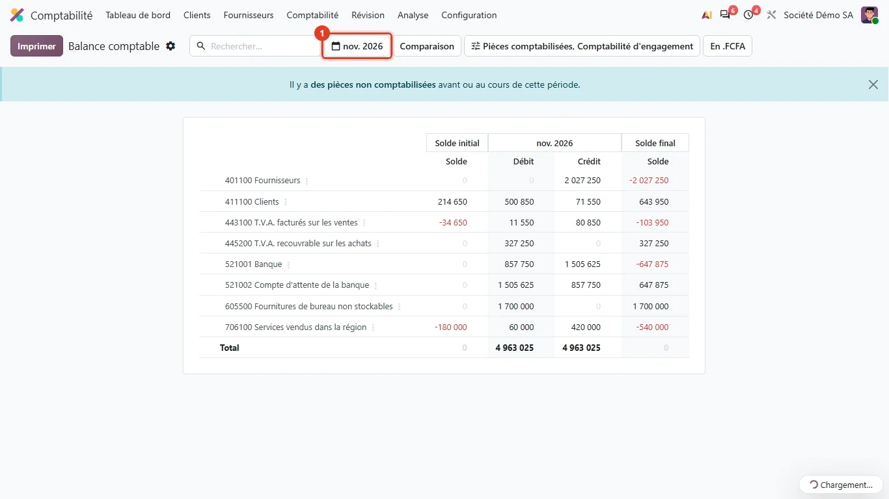
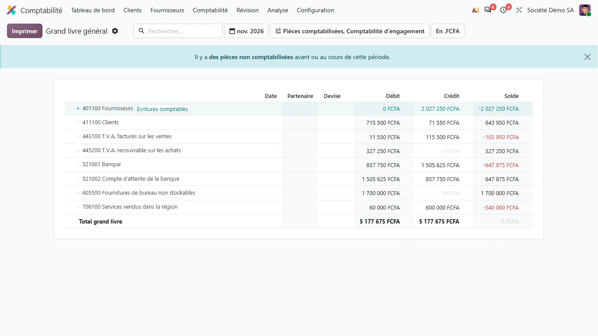

Extraire la balance générale et le grand livre
Objectif. Contrôler chaque mois les comptes, une fois toutes les opérations saisies.
Menu Odoo 15Comptabilité > Rapports > Balance générale / Grand livre
Étapes
- Ouvrez la Balance générale et choisissez la période (1).
- Contrôlez les comptes d'attente, la caisse, les banques, les clients et les fournisseurs.
- Cliquez sur un compte pour ouvrir son détail (grand livre).
- Exportez en PDF ou Excel pour le dossier de clôture du mois.


À vérifier
- Les comptes d'attente sont à zéro.
- Les soldes de banque égalent les relevés.
À éviter
- N'exportez pas une balance avec des pièces encore en brouillon : le bandeau vous le signale.
Exercice
Éditez la balance du mois et justifiez trois comptes.